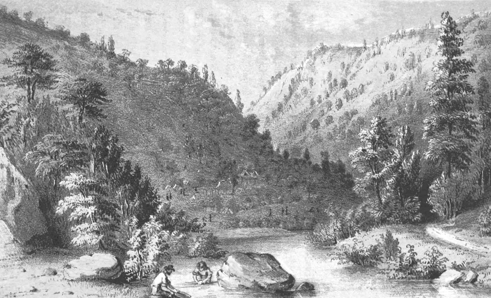

Comme toutes les personnes qui éprouvent l'absurdité de notre monde et qui s'éloignent du chemin qu'on a tracé pour elles, nous voulons reprendre notre avenir en main. Pour le moment, nous faisons pâle figure dans notre impuissance collective à faire cesser un ravage écologique qui s'amplifie de jour en jour.
Néanmoins, nous ne partons pas de rien. Nous partons même d'un fourmillement d'initiatives et d'actions et nous entretenons la mémoire vive des luttes passées. Les retrouvailles avec le monde sensible ont commencé. Un mouvement écologique est en plein essor. On se met à cultiver ses légumes, des quartiers populaires aux jardins en permaculture. On monte des AMAP1 pour soutenir l'agriculture locale, on réapprend à bâtir, bricoler, capter de l'énergie, et à fabriquer low tech. On quitte son métier, on s'entraide, on se libère du temps, on part à l'aventure, on se met au vert. On établit des zones à défendre partout où il faut empêcher les avancées du béton. On s'ennuie parfois dans les marches pour le climat, on fait la grève scolaire, on désobéit, on se joint aux réflexions collectives sur l'avenir de notre société et, parfois, aux émeutes.
Dans ce foisonnement, il y a bien sûr toutes les asymétries et les divisions qui traversent la société. Il y a une écologie moralisatrice qui convient bien aux ravageurs, et dont nous ne voulons plus entendre parler. Il y a une écologie télégénique, qui représente un début de sécession des classes moyennes, sincère mais laborieuse. Enfin, il y a une écologie populaire diffuse, mais qui n'apparaît pas sur les radars médiatiques car elle n'a pas le label vert. On l'appelle donc solidarité familiale et communautaire, récupération, agriculture paysanne, potagers, vie de quartier, occupation de rues et de ronds-points.
Nous essayerons ici de rendre cette situation lisible à partir de quatre orientations stratégiques : l'autonomie pour base, des fronts d'enquête, des fronts offensifs, et une coopération large. On n'y trouvera rien qui soit de l'ordre d'un programme partisan, ou d'une série d'alternatives prêtes à l'emploi. Nous préférons poser des problèmes, esquisser des lignes d'action et de réflexion, plutôt que de répondre à l'injonction de « proposer » abstraitement un système social tout neuf, qui n'a aucune chance d'être réalisé. Nous parlons de ce qui existe, de ce que nous avons à faire, et de ce que nous voulons.
Le destin de notre foisonnement n'est pas fixé. La morale écologique sert déjà aux gouvernements pour habituer leur population à l'austérité, à la contrainte, à la surveillance de soi et des autres et à la brutalité des « adaptations nécessaires ».
Nombre d'écologistes s'imaginent un monde meilleur comme une sorte de « réseau multirégional et interdépendant de communautés en grande partie auto-suffisantes»2 . Si nous acquiesçons en partie à ce projet, nous chercherons aussi à le questionner. Nous refusons de définir l'autonomie comme une autarcie communautaire ou individuelle, qui ne pourrait que nous isoler face à un ennemi organisé. Pour nous, l'autonomie n'est pas l'émancipation de toute dépendance, mais un travail sur nos dépendances. De sorte qu'il nous faut affirmer nos interdépendances avec notre milieu, nos communautés, nos ami·es, qui rendent le monde habitable et hospitalier, et trancher les dépendances qui nous enchaînent au ravage (à l’État, au capitalisme, à la colonisation, au patriarcat). Voilà de quoi définir deux gestes écologiques cardinaux et intimement liés : interrompre le ravage, habiter le monde. Quels obstacles s'opposent à ce projet ? Quelles pratiques explorons-nous pour y remédier ? Comment gagner du terrain ? Comment défendre ce terrain ?
Autonomie politique
Deux voies impraticables : pourquoi l'autonomie ?
Des campagnes électorales aux médias en passant par l'éducation, le jeu social est massivement destiné à entretenir l'économie du ravage. Pour le mouvement écologique, deux voies politiques opposées nous semblent absolument impraticables : attendre tout de l’État ou, au contraire, attendre tout d'une sécession absolue.
La fonction fondamentale de l’État moderne, administrer une population pour en tirer une richesse croissante, s'oppose à tout projet écologique. L’État (status) n'est là que pour instaurer, maintenir et perfectionner un ordre social (statu quo), un ordre qui est aujourd'hui celui de l'économie, et donc celui du ravage. Les États sont subordonnés au fonctionnement de l'économie mondiale, dont ils garantissent les systèmes de monnaie, de crédit, de dette, et les accords commerciaux. Ils ne peuvent donc pas s'extraire magiquement des contraintes de cette économie pour prendre des mesures écologiques qui pourraient la mettre en crise. Quant au rôle prétendument « protecteur » ou « social » de l'État, il ne faut pas se laisser abuser : l'idée de service public et de sécurité sociale ne sont apparus dans l'histoire qu'au moment où il a fallu faire des concessions aux forces sociales et aux mouvements de révolte. Aujourd'hui, ces services sont en train d’être privatisés ou démantelés, puisque la fin de la croissance facile signe la fin de l’État-providence. L'écologie ne peut pas être un ensemble de mesures que l'on exige de l’État, puisque celui-ci a pour fonction le maintien d'une économie de croissance : il ne peut rien pour nous, mais peut tout contre nous.
Cependant, sortir du fantasme de la transition, c'est aussi sortir du fantasme contraire, celui d'une sécession absolue et minoritaire. Cela nous exposerait au mieux à l'impuissance, dans le cas de la communauté autosuffisante repliée sur elle-même ; ou au pire, à la répression, dans le cas des groupuscules armés clandestins. Une zone à défendre (ZAD), par exemple, ne constitue jamais une île en parfaite autarcie, et la majorité des personnes qui y luttent et y habitent bénéficient aussi de certains services que l'État maintient (hôpitaux, RSA, etc.), même si elles travaillent à leur autonomie. À vouloir nous couper trop nettement du monde du ravage, nous risquons de laisser beaucoup de personnes sur l'autre rive, et de nous isoler. On veut nous maintenir dans une alternative entre deux voies sans issue : attendre notre salut des États ou nous exposer au tandem matraque-prison. Il nous faut donc apprendre à louvoyer.
Construire un réseau de résistances autonomesC'est à nous, qui voulons vivre, et non aux gouvernements, de prendre en charge la réalisation de l'écologie sans transition. Il nous faut donc trouver le moyen de quitter le rôle de spectateur·ice auquel on nous assigne.
Si nous préférons parler d'autonomie politique plutôt que de démocratie, c'est parce qu'il ne s'agit pas d'établir un système politique unique qui serait le même pour tou·tes et dont la fin ultime serait la prise de décisions. L'autonomie politique désigne les moyens multiples que nous avons de retrouver prise sur nos vies et de nous émanciper des acteurs et des institutions qui nous oppriment, d'abord à l'échelle locale (quartier ou communauté) puis de manière ascendante, à des échelles plus grandes. Mais cette pratique organisationnelle admet la diversité des personnes en présence et prend en compte leurs antagonismes, sans opérer un lissage des opinions comme trop souvent en démocratie. L'autonomie politique part de la base. Le choix des manières d'habiter le monde appartient toujours premièrement aux habitant·es, et non à des gestionnaires ou des représentant·es. Les habitant·es auront moins tendance à ravager les milieux où iels vivent, au contraire des acteurs politiques et économiques qui ne l'habitent pas.
Pour retrouver sans transition du pouvoir d'agir, le geste le plus simple est de travailler à relier nos communautés, groupes et organisations de toutes sortes. Évidemment, un réseau d'autonomies ne peut pas se substituer immédiatement aux institutions politiques et sociales. Renforcer notre camp pourrait d'abord consister à faire un usage subversif des institutions (administrations, entreprises, universités, hôpitaux, etc.). Depuis telle ou telle position institutionnelle, on est plus à même de faire désister nos collègues et ami·es, et de détourner certains usages au profit de la résistance. Une chercheuse, un comptable, une aide-soignante, un ingénieur pourront par exemple apporter à un mouvement écologique des travaux scientifiques, des techniques de fraude, du matériel de soin, ou des dispositifs pour capter l'énergie.
Pour ce qui est des pratiques collectives de décision à l'intérieur de notre réseau d'autonomies, et notamment de la démocratie directe, nous voudrions attirer l'attention sur deux choses. Tout d'abord, nous ne serons jamais tou·tes d'accord, et c'est très bien comme ça ; un mouvement n'est jamais aussi vivant que lorsque des points de vue divergents peuvent être exprimés. Ensuite, nous ne serons jamais tou·tes d'accord sur la façon de nous mettre d'accord ; le processus démocratique peut rendre les discussions longues et usantes. Le mouvement des gilets jaunes a par exemple fait preuve d'une grande diversité dans les modes de décision. On a décidé d'actions et de règles lors de réunions informelles sur les parkings ou sur les ronds-points ; on a débattu, sondé, et donné des rendez-vous grâce aux réseaux sociaux ; on a prévu des opérations lors de soirées entre proches ; on a pu compter sur des figures du mouvement qui ont servi de relais, et qui n'étaient plus écoutées ni suivies à la moindre trahison. Enfin, bien sûr, on a mené plusieurs fois une expérience de démocratie directe qui consiste à rassembler un maximum de groupes de gilets jaunes du territoire français dans une ville, pour proposer des orientations à l'échelle nationale : l'Assemblée des Assemblées. C'est un début de réseau autonome qui a très vite avorté, en partie à cause de la répression ; mais un début qui a suffi à ébranler la politique traditionnelle, et qui est sans doute promis à un bel avenir. S'organiser par la base en une multitude de communautés, groupes, collectifs, organisations n'empêche ni de travailler à des circulations entre les milieux, ni de prendre des décisions à grande échelle.
Maîtriser nos conditions d'existence : bases et fronts d'enquête
Pour l'instant, nous dépendons énormément de l'économie qui ravage la planète pour nous nourrir, nous loger, nous vêtir, nous amuser, nous soigner, nous déplacer, communiquer. Cette dépendance nous force souvent à occuper les deux tiers de notre temps éveillé par un travail souvent insatisfaisant, qui contribue à nourrir la croissance économique. La condition et le but de l'autonomie politique, c'est donc la maîtrise collective de nos conditions d'existence : nous devons nous rendre indépendant·es des infrastructures du capitalisme et renforcer notre réseau d'interdépendances écologiques.
Ce réseau peut être conçu comme un ensemble de bases écologiques qui construisent d'ores et déjà des mondes justes et vivants. Afin de gagner du terrain, ces bases peuvent ouvrir deux sortes de fronts : des fronts d'enquête pour augmenter nos connaissances pratiques et donc notre puissance, et des fronts offensifs pour nous défendre et bloquer le ravage écologique.
L'enquête est une démarche qui consiste à aller à la rencontre de tou·tes celleux qui peuvent constituer des allié·es dans le milieu associatif, le système agricole, l'appareil industriel ou l'économie des services. Il s'agit de voir avec ces personnes, plus que de penser à leur place, contrairement à ce que proposent les programmes électoraux3.
Nous voyons trois situations dans lesquelles déployer nos fronts d'enquête. Nous n'esquisserons que ces trois grandes directions et quelques exemples illustratifs, comme un début de plan à compléter ou amender :
1) Faire nous-mêmes, en construisant des bases (communes, ZAD, fermes, squats, médias, artisanat, groupes de soin, de recherche, groupes de toute sorte), puis relier ces bases par l'enquête.
2) Transformer ou subvertir l'appareil productif, quand il est compatible avec des conditions d'existence écologiques, mais selon des modalités qu'il nous faudra déterminer avec les personnes qui travaillent actuellement dans ces secteurs (agriculture, petite industrie, petites entreprises, services de santé).
3) Démanteler les éléments de l'appareil productif que nous ne voulons pas garder (la plupart des usines, centrales nucléaires, bureaux d'entreprises, centres commerciaux).
Il est réjouissant d'observer un peu partout un mouvement de création de nouvelles conditions d'existence. De nombreuses personnes quittent leur travail, pour expérimenter la permaculture, l'artisanat, la recherche, pour retaper des fermes ou créer des AMAP. Cette dynamique imprègne les communautés de collapsologues, les squats, les recycleries ou les jardins partagés. Mais il reste encore à donner un sens à ce fourmillement d'initiatives, afin qu'il ne serve pas de palliatif à l'état de crise généralisée du monde de l'économie. Ces îlots de débrouille sont les futures mailles de notre autonomie collective, si l'on veut bien se donner la peine de les relier, à la fois entre eux, mais aussi aux luttes en cours sur les ZAD, dans les quartiers populaires, les manifestations ou les grèves.
Qui produit de la nourriture peut pratiquer des prix préférentiels - ou pas de prix du tout - avec celleux qui bloquent, occupent ou grèvent. Qui est cheminot·e dans une gare peut organiser des voyages en train gratuits, en échange d'une aide reçue lors de grèves. Qui a un peu de terrain à la campagne peut accueillir des camps écolos l’été, ou héberger un·e activiste qui a besoin de se faire oublier. Selon les opportunités, cette répartition des tâches peut être amenée à changer.
Nous sommes encore dans une large mesure coincé·es par le travail, la dette, la vie familiale ou simplement par la peur. Le principal obstacle qui s'oppose à un désistement général est cette dépendance que nous avons à l'égard du bon fonctionnement de l'économie comme des services publics pour nos besoins de base. Cependant, le « niveau de vie » et le « pouvoir d'achat » sont amenés à se réduire dans nos pays. C'est pour nous moins une occasion de lamentation qu'une motivation à travailler sans transition pour réorganiser les services de manière autonome. La faillite des gouvernements à gérer la pandémie de Covid-19 devrait intensifier cette envie d'autonomie et de solidarité hors de leur giron. Déjà les groupes se multiplient et les techniques s'élaborent afin de prendre en charge la vieillesse, la retraite, la solitude, la parentalité, la maladie et la défense de nos communautés.
Ce qui devrait être propre à rassurer les plus sceptiques, c'est que ce mouvement spontané d'autonomie et d'entraide a été celui de centaines de milliers de Français·es au plus fort du mouvement des gilets jaunes. Sur les ronds-points occupés qui étaient à la fois des bases de rencontre et des lieux de blocage économique, on venait vendre à petit prix ou donner gratuitement, on mangeait ensemble, on passait des soirées au coin du feu, on se filait des coups de main, on construisait des grandes cabanes pour s'abriter, on négociait avec l'agriculteur·rice d'à côté une petite parcelle de terre pour cultiver. Si cela ne suffisait pas, on réquisitionnait des bâtiments pour ouvrir des maisons du peuple, pour loger les mal-logé·es, accueillir des débats et des conférences, ouvrir un atelier de bricolage. Et bien sûr, on prenait régulièrement la rue pour arracher des concessions au gouvernement. Ce qui a été expérimenté dans ces bases écologiques temporaires n'est pas perdu.
Transformer ou subvertir l'appareil productifPour l'instant, il est évident que nos ébauches et nos envies de « services communs » ne peuvent pas se substituer aux institutions, notamment pour ce qui concerne des besoins de base à grande échelle. Il est évident aussi que l'économie et les infrastructures qui répondent à ces besoins ne peuvent pas demeurer tels quels. Que faire de l'agro-industrie, de la distribution d'eau, de gaz, d'électricité, des transports collectifs, de la médecine, des télécommunications, et de tout ce que cela suppose d'établissements, d'usines, de réseaux souvent mondialisés ? Que faire de ce « confort » qui garantit une certaine émancipation par rapport au travail et à la rudesse de la vie ?
La réponse à ces questions cruciales est l'objectif de ce deuxième front d'enquête. Notre démarche d'enquête consisterait, dans le milieu de la production à considérer les problèmes sous un angle différent de celui des syndicats qui sont parfois bloqués sur des questions obsolètes. Il ne s'agit plus seulement de se demander : les travailleur·ses sont-iels bien traité·es ? sont-iels assez rémunéré·es ? Mais : doit-on produire ce que l'on produit ? doit-on faire ce que l'on fait ? Si la réponse est non (dans la plupart des cas) alors cela implique de remettre sur le tapis la vieille question de la réappropriation des moyens de production, mais aussi la question proprement écologique de leur transformation ou de leur démantèlement.
C'est évidemment parmi les gens qui travaillent dans ces secteurs (agriculture, santé, petite industrie, etc.) que nous devons trouver des allié·es pour cette tâche. En enquêtant et en discutant, nous pourrons élaborer à leur contact une écologie qui ne soit pas une simple négation de leur activité, sans égard pour les déterminismes qu'iels subissent. Tout cela peut paraître idéaliste et se heurte effectivement à de grandes difficultés que nous ne prétendons pas avoir résolues.
Prenons l'exemple crucial de l'agriculture. Comment empêcher ceux qui ont la main sur la production et la distribution alimentaire de se livrer à tous les chantages, alors qu'il n'y a tout au plus qu'une semaine de réserve alimentaire dans les supermarchés ? Si l'on veut se risquer à mettre à l'arrêt l'économie à l'origine du ravage écologique, il faut pouvoir compter sur une agriculture locale, efficace et respectueuse de celleux qui cultivent ainsi que des milieux vivants. Il ne sera pas question pour cela de se passer des agriculteur·rices, car l'engouement actuel pour le jardinage ne suffira pas à tou·tes nous nourrir.
Pourtant, le fossé qui sépare aujourd'hui les écologistes urbains du monde agricole ne cesse de s'agrandir. Chez certains écolos on continue d'affirmer qu'avec de la bonne volonté, un peu d’argent public et de nouvelles normes environnementales, on parviendra à transitionner vers une agriculture durable. On répète qu'elle doit être biologique, comme si c'était une garantie définitive de son caractère écologique. Mais sans rupture avec les industriels et l'administration, l'agriculture continuera de ravager les milieux vivants, d'asservir voire de tuer celleux qui la pratiquent, et de massacrer à la chaine des centaines de milliards d'animaux non-humains chaque année4. Sous couvert de protection de l'environnement et de la « santé des populations », l’administration édicte sans cesse de nouvelles normes. Elles représentent pour les acteurs de la filière agricole (vendeurs de produits chimiques, vendeurs de matériel agricole, industries agro-alimentaires, banques et assurances) autant de potentiels produits à vendre aux agriculteur·ices. Pour faire face aux coûts supplémentaires que représentent les mises aux normes, les agriculteur·rices doivent s'endetter, intensifier leur production, allonger leurs journées. L'écologie devient alors un amas d'injonctions, un instrument supplémentaire de leur servitude.
Plutôt que de spéculer sur une mutation soudaine des méthodes et une improbable transmission pacifiée de l'intégralité du foncier, allons à la rencontre des agriculteur·rices aujourd'hui en exercice. Transformer l'agriculture industrialisée en agroécologie nécessite d'abord beaucoup plus de main d'œuvre. C'est en dialoguant et en éprouvant les réalités matérielles de leur profession que nous serons en mesure de nous découvrir des intérêts et des ennemis communs, et donc de lutter conjointement. Outre qu'il faut mieux répartir la pénibilité du métier en travaillant aux côtés des agriculteur·ices, nous pouvons contribuer à transformer les techniques de production, résister collectivement aux contrôles administratifs ou aux visites des huissiers de justice5 .
DémantelerTout ce qui ne pourra pas faire l'objet d'une réappropriation ou d'une transformation écologique, il faudra le démanteler. C'est-à-dire penser la destruction d'une bonne partie de l'appareil industriel et des infrastructures énergétiques (hydrocarbures, nucléaire) ; en finir avec une bonne partie des secteurs économiques inutiles (publicité, communication, banque, assurance) ; mettre en échec les institutions et les infrastructures qui ne peuvent que nuire aux mondes écologiques (l'armée, la police) ; cesser de surproduire inutilement pour nourrir la croissance (un tiers de la nourriture produite dans le monde finit dans les poubelles). En réalité, ce démantèlement n'est rien d'autre que ce que préconise le GIEC quand il dit qu'il faut réduire drastiquement les émissions de carbone. Cependant, on voit mal comment il pourrait avoir lieu sans confrontations et ruptures (blocages massifs, sabotages, dynamiques insurrectionnelles).
Pour certains secteurs à démanteler, notamment le nucléaire, c'est un travail de longue haleine qui nous attend et que nous n'avons pas la prétention d'accomplir en un jour. Nous commençons seulement à réunir les savoir-faire permettant de penser la fin de ce système. La simple existence des centrales rend impossible le projet, déjà évoqué, d'une écologie comme tissu de communautés en autarcie, puisque le nucléaire met en danger la vie sur terre en son entier, et à très long terme. Le démantèlement des centrales nucléaires n'est possible que sur plusieurs dizaines d'années, et suppose une quantité immense de moyens matériels (métaux, énergie abondante, informatique), humains (expert·es et technicien·nes spécialisé·es, ouvrier·es « motivé·es » pour se faire irradier) ainsi qu'une surveillance constante et armée des déchets nucléaires. Sera-t-il possible de le faire de manière autonome, ou faudra-t-il passer par l'appareil d’État ? Aura-t-on encore les moyens de ce démantèlement et de cette surveillance des déchets dans les prochaines années, les prochains siècles ? Nous n'avons pas encore les réponses à ces questions, mais nous ne comptons pas attendre de les avoir pour interrompre le ravage écologique.
Ouvrir des fronts offensifs
Si vous entendez que pour améliorer ou déployer telle ou telle activité, la rendre plus « verte », il faut commencer par bétonner, sortez votre revolver.
Philippe Bihouix
L'autonomie ne peut pas se penser comme une simple alternative se construisant à côté du ravage. Non seulement les acteurs du ravage cherchent toujours à s'opposer à ce qui met à mal leur hégémonie sur l'existence, mais en plus, la poursuite de leurs activités destructrices menace la pérennité de notre autonomie naissante. L'autonomie politique et la transformation des conditions d'existence doivent être pensées en lutte. Elles doivent se coupler à des fronts offensifs qui ciblent les acteurs et infrastructures du ravage.
Prenons garde, cependant, à ne pas réactiver des mythes séculaires, tel que celui du « grand soir », de la révolution one shot, celui de la grève générale sans aucune volonté de transformer le mode de production, ou celui de la lutte armée groupusculaire, qui ont si souvent échoué au cours des siècles précédents. De plus, les États sont beaucoup mieux équipés aujourd'hui pour faire face à ce type de soulèvements : caméras à chaque coin de rue, techniques et matériel de maintien de l'ordre plus efficaces, surveillance globale.
Fuyons les postures dogmatiques et nihilistes, où rien n’est jamais assez pur, assez radical. Fuyons aussi les postures citoyennes toujours soucieuses d'être comme il faut. Nos luttes bénéficient rarement d'une médiatisation favorable, et cela ne doit pas être le seul critère de nos actions. Pour des objectifs similaires, des modes d'action divers peuvent être envisagés. Ils doivent être sélectionnés selon leur pertinence dans un contexte spécifique, mais aussi selon la volonté ou la capacité des personnes à supporter les risques qui en découlent. L'enjeu est alors de penser la combinaison de plusieurs modes d'action offensive, afin de donner de la place à tou·tes au sein de la lutte, tout en gagnant en efficacité.
Pour mieux entamer l'offensive, pensons aussi la défense. Là où nous attaquerons, si nos actions sont réellement dangereuses pour nos cibles, la répression sera toujours présente. Il est essentiel que nos mouvements se protègent avant même d'agir en se formant notamment à la défense numérique et juridique6. Enfin pour que nos actions ne soient pas mises en échec par le bras armé de l’État, la police, il nous faut non seulement prévoir du matériel de résistance et de protection, mais aussi connaître les techniques de déplacement et de protection collective. Une offensive contre le ravage doit être pensée sur le long terme, et envisagée stratégiquement : quels sont nos objectifs ? Quels sont les moyens d’action qui s’offrent à nous ? Nous rejetons l'idée de proposer un plan d’action tout tracé. Voici en revanche un aperçu de l'état actuel de nos réflexions. Nous discernons trois fronts offensifs, trois espaces de luttes sur lesquels peuvent se déployer différents modes d’action : bataille culturelle, blocage économique et luttes locales.
Le premier front est celui des idées, des analyses critiques, des convictions qui poussent à agir. Il prend place sur toutes les plateformes d'expression, médias, réseaux sociaux, institutions politiques, mais aussi à l'école et à l'université. Ce travail est nécessaire pour partager plus largement nos questionnements, nos affects et nos luttes. Un ensemble de moyens d’action indirects et symboliques peuvent être utilisés : actions juridiques, campagnes d’information, affichages, usage subversif des réseaux sociaux, manifestations festives, actions de désobéissance symboliques, décoration des espaces publics (tag, collage, anti-pub). Il importe aussi de diffuser la mémoire des luttes passées pour s'inspirer de leurs victoires et apprendre de leurs échecs.
Le deuxième front est celui du blocage économique qui vise à faire cesser une activité. Les multinationales ne comprennent que la logique de l'argent, et avec elles le dialogue ne mène à rien. Le principe est simple : plus une activité sera rendue coûteuse par le blocage, plus les perspectives de profit s'amenuiseront, jusqu'à faire disparaître l'activité. Par exemple le mouvement international Ende Gelände organise régulièrement le blocage de mines de charbon pour décourager cette activité. De même, partout dans le monde, des startups de trottinettes en libre accès ont dû retirer leur flotte de certaines villes du fait du vandalisme écologique qui s'est abattu sur ces véhicules bourrés de métaux rares. Un panneau publicitaire vidéo consomme autant d'électricité qu'un foyer de trois personnes : s'ils étaient systématiquement récupérés, subvertis ou simplement détruits, on n'en produirait plus. Cette tactique du harcèlement économique concentré sur une activité a aussi fait ses preuves à grande échelle. En Angleterre, pour augmenter considérablement le coût d'un projet national prévoyant la construction de 600 routes, un mouvement de résistance est lancé par les écologistes dans le pays : des dizaines de camps sont construits pour bloquer les chantiers, les bureaux et les sièges sociaux des entreprises concernées sont envahis, les machines sont systématiquement sabotées ou incendiées. Résultat, sur les 600 projets de routes, environ 500 ont été abandonnés7.
Le troisième front consiste à gagner durablement du terrain sur les ravageurs. Il est possible de réquisitionner des espaces divers : des lieux vides ou abandonnés par leurs propriétaires (immeubles, entrepôts, fermes) ; des zones déclarées à aménager par les autorités, auxquelles on est attaché·e et dont on souhaite protéger l’existence (bois, champs, littoraux, friches urbaines) ; les espaces où l’on vit et où l’on refuse de se soumettre aux autorités extérieures ou à la gentrification ; des lieux de production réappropriés par les travailleur·ses en multipliant les omissions pour faire céder les propriétaires (réduction de la cadence, absentéisme, grève, insubordination, démissions, mutinerie). Ces espaces repris, il nous faudra sans cesse repenser leur protection afin de pérenniser leurs existences et les activités qui y prendront place : logements, lieux de rencontre et d’organisation, espaces de contre-culture, production alimentaire, guerilla gardening8. De nombreuses zones de lutte sont actuellement actives en France, et les centaines de projets d'aménagement sont autant d'occasions d'en construire de nouvelles9.
Ces trois fronts n'ont de sens que s'ils sont coordonnés entre eux et aux bases. Méfions-nous pourtant du volontarisme, comme si toutes les transformations nécessaires devaient provenir d'une petite avant-garde militante. Les périodes les plus intéressantes sont moins celles qui voient s'éparpiller les luttes sur plusieurs fronts, que les moments de conflit généralisé, qui ne sont pas le fait de militant·es chevronné·es. Ces conflits ne se décrètent pas mais résultent en général de l'opposition d'une bonne partie de la population à un projet de loi, ou d'un contexte de crise politique ou sociale. Le concept de guerre civique fournit une bonne idée de la forme contemporaine que prennent certains de ces conflits10. Guerre car ce n'est pas une réaction ponctuelle, mais le début d'un état de lutte permanent, dans un cadre où l'adversaire nous impose de recourir à la violence. Civique, car cette guerre ne consiste pas en une guerre civile divisant la population en factions opposées, mais se fixe des limites et une discipline interne. La guerre civique nous paraît intéressante dans la mesure où elle permet de trouver le compromis judicieux entre massification et efficacité.
Les vagues de révoltes de l'année 2019, en France avec les gilets jaunes, à Hong Kong, au Liban, en Irak, en Iran, au Soudan, en Haïti, en Équateur, au Chili, fournissent des exemples inspirants de guerre civique en milieu urbain malgré la très forte répression qu'elles subissent : complicités dans toute la population, absence de leader, réseaux internet de groupes affinitaires, solidarité entre manifestant·es non équipé·es et première ligne, alternance entre blocages, escarmouches, sabotages, occupations d'universités, formation de comités et d'assemblées de quartier. Dans la mesure où la guerre civique est massive et diffuse, les participant·es deviennent relativement insaisissables. Les écologistes ont leur place dans ces moments de conflit généralisé. C'est l'occasion de prouver que l'écologie n'est pas une préoccupation morale des classes urbaines aisées, mais qu'elle cherche aussi à nouer des alliances décisives et à transformer en profondeur la société.
Coopération
Une coopération entre les luttes
Les appels à la convergence entre les luttes ont montré à bien des égards leur incapacité à se matérialiser concrètement. En parlant de convergence, on part du présupposé naïf que nos luttes se recouvrent en termes de répression, d’ennemis communs et d'objectifs. Pourtant, la réalité est bien plus complexe. Les conflits entre mouvements et les asymétries ne permettent pas de supposer qu'il existerait une lutte universelle et unitaire contre l'oppression, au sein de laquelle tout le monde pourrait converger. Des objectifs divergents peuvent parfois apparaître. Par exemple, la protection d'un site industriel pour le maintien des emplois peut s'opposer aux objectifs écologistes. De plus, les écologistes doivent accepter que tout le monde ne place pas l'écologie au cœur de son combat car elle sert souvent de prétexte à l'exclusion et à la culpabilisation des classes populaires et à la reproduction des logiques coloniales et sexistes. Ainsi, il ne s'agit pas de converger, mais de trouver des points de jonction à partir desquels coopérer de manière d'abord ponctuelle, puis éventuellement plus pérenne.
Les raisons de coopérer sont nombreuses. La lutte écologique, pour peu qu'on reconnaisse son caractère anticapitaliste, a des ennemis communs avec bien d'autres mouvements où sont impliquées des populations exploitées par ce système. Il existe des espaces et des temporalités où une cible commune peut être trouvée entre plusieurs luttes, par exemple, contre une réforme gouvernementale ou une entreprise. D'autre part, toute lutte comporte une dimension écologique, dans la mesure où elle cherche à créer d'autres manières d'exister et d'évoluer au sein des milieux vivants. Lorsque les gilets jaunes se sont installés sur les ronds-points pour vivre de récupération, d'entraide et ont bloqué des flux automobiles, qu'ont-ils fait sinon de l'écologie ? Toute volonté d'expérimentation hors des structures de domination économiques et sociales, toute ébauche de futurs désirables pour tou·tes, est l'occasion de réfléchir ensemble à nos objectifs, et de nous donner les moyens de les mettre en œuvre ensemble. Cela peut commencer par des coups de main ponctuels, comme lorsque des écologistes viennent appuyer une occupation menée par des sans-papiers. À partir de telles alliances, nous pourrons établir progressivement une coopération plus large. Enfin, nombre d'entre nous ne sommes pas seulement écologistes. Nous sommes aussi des étudiant·es ou travailleur·ses précaires, en lutte contre le racisme ou le patriarcat, et nous abritons une large diversité de genres et d'orientations sexuelles. Il est alors logique que nous souhaitions que ces questions soient présentes dans nos combats.
La question des violences policières est aussi un point de jonction important pour la coopération. La répression s'intensifie sur les luttes écologistes, du gazage d'Extinction Rebellion France au traitement antiterroriste des opposant·es à la poubelle nucléaire de Bure. Les gilets jaunes ont subi coups et mutilations à longueur de manifestations. On peut gager que les luttes écologistes vont se multiplier dans les prochaines années, et que l’État hésitera de moins en moins à mutiler et à tuer. Les techniques brutales de maintien de l'ordre qui se sont mises en place en France métropolitaine depuis 2015 contre les mouvements sociaux ont déjà fait émerger une prise de conscience accrue des violences et du harcèlement policier et judiciaire que subissent au quotidien les habitant·es des quartiers populaires. Certaines rencontres et discussions ont ainsi permis de créer des espaces de coopération notamment lors de la Marche en mémoire d'Adama Traoré en 2019, que nombre d'écologistes et de gilets jaunes ont rejointe. Par la suite, ces amorces de coopération ont pu se matérialiser de manière plus offensive dans des actions comme l'occupation du centre commercial Italie Deux en octobre 2019, ou lors de l'éphémère création d'une Maison des peuples de Paris pour l'anniversaire des gilets jaunes en novembre 2019. Ces deux moments ont réuni une large alliance d'écologistes, de collectifs issus des banlieues, de gilets jaunes et de collectifs queer et LGBT.
Autre question importante en écologie : le ravage planétaire et l'accaparement des ressources obligent actuellement des millions de personnes à quitter les milieux qu'elles habitent. Dans un tel contexte, il serait tout à fait absurde pour nous de différencier les « migrant·es climatiques » des autres, dans la mesure où les causes de ces déplacements forcés se rejoignent. Sur cette base, diverses formes de coopérations peuvent être mises en œuvre entre groupes écologistes et migrant·es. Et lorsque des espaces sont libérés du regard intempestif de la police ou de l'administration, des populations marginalisées ou sans domicile peuvent être accueillies. Pour peu qu'on ne leur impose pas nos manières de vivre et de lutter, il sera possible de profiter de leurs pratiques, de leurs savoirs, et de faire vivre des lieux comme des zones à défendre ou des squats. Nous ne devons pas négliger non plus l'étendue des réseaux de solidarité internationaux qui pourraient être créés à partir de ce genre d'alliances. Le problème du ravage écologique ne peut être résolu que globalement.
La coopération des luttes reste encore à construire, consolider et élargir. L’opposition entre modes d'action légitime et illégitime joue pour beaucoup dans le fait que nos mouvements ne se rencontrent pas et s'isolent les uns des autres. En particulier, en 2018 et 2019, les pouvoirs institués ont tout fait pour que gilets jaunes et écologistes ne se rencontrent pas : on a répété inlassablement que les un·es étaient d'infâmes pollueurs et pollueuses se livrant à toutes les violences, alors que les autres étaient des bobos inoffensif·ves et sympathiques ; la police, en outre, a beaucoup insisté pour que les manifestations qui se déroulaient le même jour restent séparées à Paris. Se plier à leur volonté, c'est accepter de se voir privé·es des moyens de résistances élaborés par des mouvements faisant au plus près l'expérience de la répression.
Une coopération écologiste nationale et internationaleEn partant de notre situation d'écologistes agissant sur le sol français, il nous semble qu'il y a plusieurs directions assez évidentes pour élargir la coopération à un maximum de groupes écologistes. Les alliances nouées permettent ensuite de coopérer localement ou nationalement à des actions coordonnées, par exemple lors de blocages d'entrepôts logistiques le jour du Black Friday, ou d'opérations ciblant certaines entreprises.
À l'échelle internationale, cette coopération peut être facilement étendue sur la base de la proximité linguistique, en utilisant la francophonie. Il est également opportun de se rapprocher sur la base de la proximité géographique, par exemple lorsque les résident·es d’un pays différent habitent un même milieu vivant : un bassin versant, un massif forestier, une chaîne de montagne. Les habitants non-humains de ces derniers ne reconnaissant pas les frontières, il s’agit de les imiter. On conçoit difficilement la défense d'un fleuve transfrontalier si les revendications s'arrêtent à la frontière.
Les obstacles à une lutte conjointe des écologistes de différentes nationalités sont nombreux. Au moment des catastrophes dites naturelles, nous sommes souvent réduit·es à l'impuissance. Nous ne pouvons souvent que constater, après coup, sur notre fil d'actualités, l’ampleur des dégâts d’un tremblement de terre, d'incendies majeurs, d'une inondation suite au passage d'un ouragan ou de la construction d’un nouvel oléoduc. Pour pallier cette impuissance, nous pouvons utiliser les réseaux existants et en créer de nouveaux, afin de se mettre en lien avec celleux qui font face à ces catastrophes. Le fait d'ouvrir nous-mêmes des lieux d'hébergement et d'organisation collective à l'abri de l’État peut servir justement à créer ce genre de bases de rencontres. Lorsque la lutte conjointe n’est physiquement pas envisageable, il reste la possibilité de soutenir les autres à distance : médiatisation de leur lutte, dons d’argent, comités de relais et de diffusion d'informations ou actions de soutien ne sont pas à négliger. Par exemple, si une multinationale est impliquée dans la déforestation en Amazonie, il peut être envisagé de visiter les bureaux qu'elle possède en France. En raison de la mondialisation et des processus néo-coloniaux, des luttes géographiquement éloignées s'attaquent souvent aux mêmes ennemis.
Sans doute, il nous reste beaucoup à faire et à penser. Cette proposition stratégique en quatre volets a surtout vocation à poser les termes du débat, et les problèmes essentiels que rencontre l'aspiration à une véritable rupture écologique. Nous espérons que ce document contribuera utilement aux discussions en cours, qu'il recevra des critiques et des amendements, ou qu'il sera rendu caduque par une soudaine éclaircie de notre horizon. En attendant, nous proposons de ne pas en rester à ce projet très général, et d'en examiner directement quelques applications pratiques.
---1. AMAP : Association pour le Maintien d’une Agriculture Paysanne.
2. D. Abram, Comment la Terre s’est tue, La Découverte, 2013.
3. Autour de l'enquête, voir J. Rafanell i Orra, Fragmenter le monde, Editions Divergences, 2018.
4. En effet, remettre la main sur les moyens de production de notre nourriture en démantelant l'agriculture industrielle, c'est tout autant transformer le travail agricole humain que la place des animaux non-humains dans ce processus. Une perspective antispéciste pourrait servir à repenser et changer profondément ces rapports, afin d'arriver à une cohabitation enfin juste et respectueuse de leur existence et de leurs intérêts. Dès lors se pose la question de limiter si ce n'est cesser l'utilisation de leur chair et leur peau, de leur force et de leur potentiel de divertissement, mais aussi leur reproduction industrielle par la contrainte.
5. À titre d'exemple, le collectif Faut pas pucer ! organise des comités d'accueil aux services administratifs qui viennent contrôler les éleveurs rétifs au puçage des animaux. Dans les années 1970, les agriculteur·ices du mouvement des Paysans travailleurs résistaient collectivement à la saisine des biens des plus endetté·es d'entre elleux.
6. Vous pouvez trouver le très complet Guide d'autodéfense numérique à l'adresse suivante : https://guide.boum.org/
7. L'histoire de cette lutte contre le programme routier anglais est racontée dans À bas l'empire, vive le printemps! d'Earth First, Editions Divergences, juillet 2020.
8. Guerilla guardening, mouvement d'activisme politique, utilisant le jardinage comme moyen d'action environnementaliste, pour défendre le droit à la terre, la réforme agraire ou encore la permaculture.
9. Pour trouver une zone de lutte contre un projet d'aménagement non loin de chez vous, la Carte des luttes locales de Reporterre peut être utile.
10. L'idée de guerre civique vient d'un entretien avec P-H. Castel, « Sortir ses griffes face à la fin du monde », sur le site grozeille.co.